Base-各个坐标空间
常复习篇章。
渲染 空间转换过程
VertShader
Object模型空间开始
——(UNITY_MATTIX_M)——>World空间
——(UNITY_MATTIX_V)——>View视角空间
——(UNITY_MATRIX_P透视或正交)——>齐次空间
中间
硬件会做这些操作，但是如果想在FragShader里使用ScreenPos，需要自己计算。通过齐次空间的坐标进行计算。
Clip齐次空间——(裁剪)——(齐次除法，各分量除以w)——>NDC——(视口变换)——>Screen屏幕空间
FragShader
获取到的是Vert最后传过来的SV_POSITION，齐次空间的坐标。
虽然这时候已经是在计算像素了，但是像素POS是未知的，如果需要像素位置，需要自己计算。
模型空间
模型以自身中心为原点，每个顶点基于原点的坐标。
切线空间
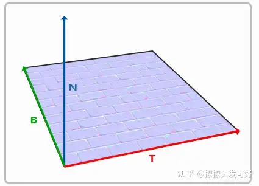
N为法线(Normal)，代表z轴。
T为切线(Tangent)，代表x轴。
B为副切线(BitTangent)，代表y轴。
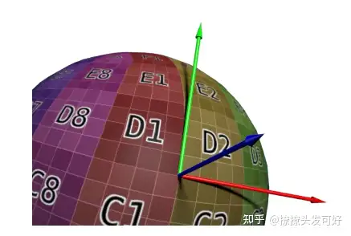
以Sphere为例，切线空间的三个分量(x，y，z)只考虑方向在模型空间就是本身(T, B, N)。
表示为矩阵是，一般叫TBN矩阵。（T、B、N都是模型空间）
具体切线空间的转换写过一篇知乎：
https://zhuanlan.zhihu.com/p/361417740
世界空间
一般把模型的各个顶点从模型空间转换到世界空间。
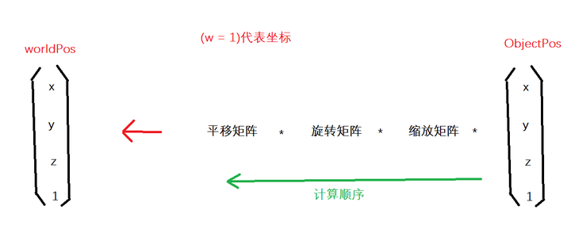
Unity显示WorldPos.x
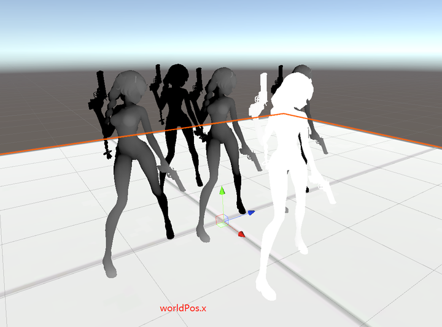
1 | |
视角空间
视角空间的转换矩阵可以拆解为旋转和位移，一般无Scale。
比如已知Camera在World中的Position和Rotation，本身Camera的Tranform是CameraToWorld。
WorldToCameraView是先位移-Camera.Pos，然后再乘CameraToWorld旋转矩阵的逆矩阵。
一般从世界空间转到视角空间。使用UNTIY_MATRIX_V。
1 | |
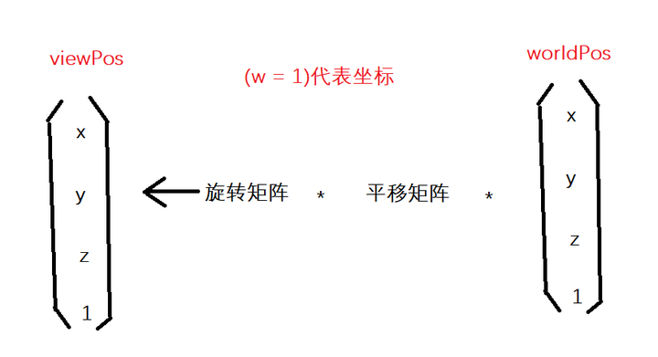
原点从世界中心到了camera原点。并-Z前、Y上、X右。
这意味着Unity视角空间又使用了右手坐标系(世界空间、模型空间是左手)。
这个时候-z就是物体在场景的深度。
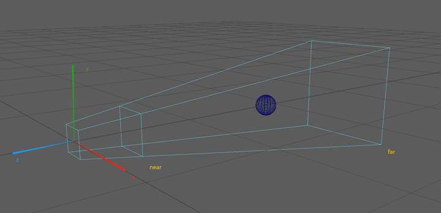
Unity里视角空间显示出来：可以看出来-z是正方向。
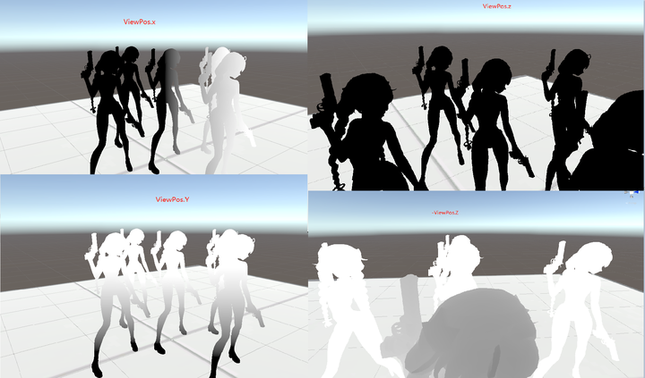
灯光空间
一般从世界空间转换到灯光空间。
和View空间转换一样，WorldToLight是通过LightToWorld获取。
ShadowMap空间
采样ShadowMap的时候，是需要从世界空间转换到ShadowMap空间。
经历的阶段World——>Light——>阴影视锥体空间投影
UE的写在了ShadowMap篇。
UnitySRP这个接口获取到CSM的View和Projection矩阵。
获得了ViewMatrix和ProjectionMatrix，然后再做Tile划分。
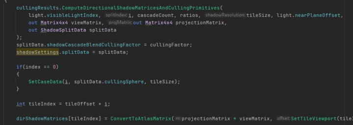
齐次裁剪空间
一般从View视角空间，再投影到齐次空间。
有透视投影和正交投影两种。
投影矩阵之前推导过，翻一下笔记本。
//todo 加推导投影矩阵过程 Games101的
1 | |
NDC空间(标准化设备空间)
ClipPos——>透视除法(xyz/w)——>NDC
vert shader结束输出clipPos之后，GPU做裁剪，然后做透视除法将顶点转到NDC。
透视除法是把Clip空间的pos各个分量除以w，范围归一到[-1, 1]
NDC就是一个方格子，在格子之外就裁剪掉。
NDC的范围根据平台不太一样。
| - | - | - |
|---|---|---|
| ReversedZ | NDC Z范围(1,0) | DX |
| NoReversedZ | NDC Z范围(-1,1) | OpenGL |
下面图代表Z的取值范围示意图。
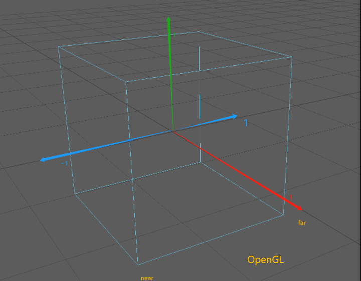
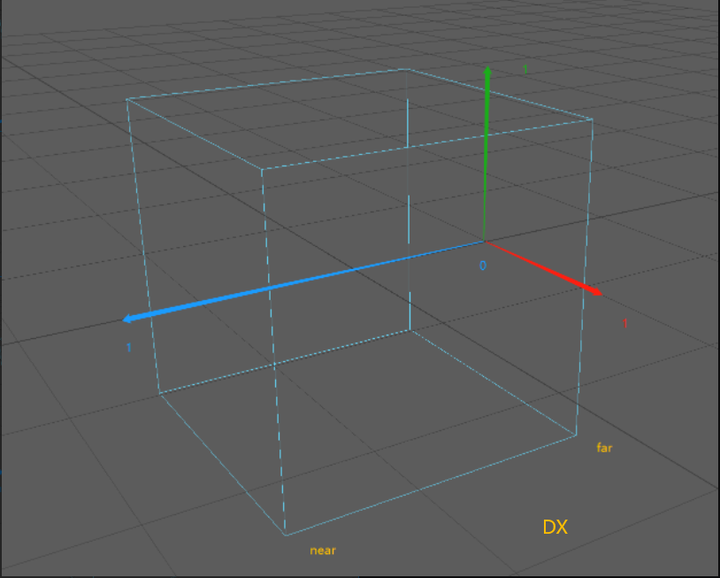
屏幕空间坐标(如Pixel1920x1080)
映射屏幕的过程：
x(-1 , 1)——>(0, PixelWidth)
y(-1 , 1)——>(0, PixelHeight)
o.scrPos.x = (o.clipPos.x / o.clipPos.w + 1) * _ScreenParams.x * 0.5f;
o.scrPos.y = (o.clipPos.y / o.clipPos.w + 1) * _ScreenParams.y * 0.5f;
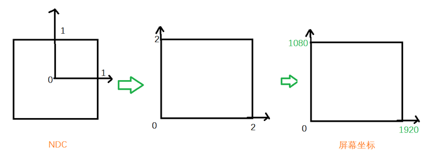
屏幕空间UV(0~1)
和屏幕空间坐标类似，只不过不乘屏幕宽高。
o.screenUV.xy = (o.clipPos.xy / o.clipPos.w + 1) * 0.5f;
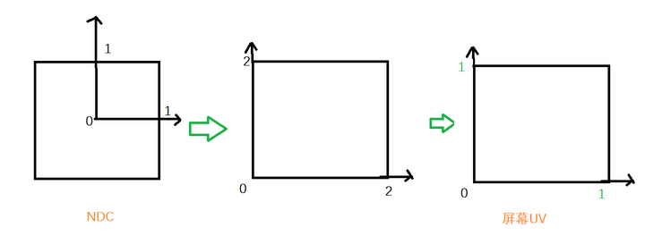
齐次空间的屏幕UV(0~w)
o.scrPos = ComputeScreenPos(o.clipPos); //返回齐次坐标下的屏幕坐标, xy范围为(0,w)
它的结果保留了w，如果想采样，用tex2Dproj不用手动除w。
也可以手动tex2D(_Tex，i.scrPos.xy / i.scrPos.w)
1 | |
深度重建世界坐标
基本上大多数算法都会用到。
推导过程：
已知：NDC = ClipPos / Clip.w
worldPos.xyz
= _InverseVP * ClipPos
= _InverseVP * NDC * Clip.w
因为此时不知道Clip.w，但是有一个情况是worldPos.w = 1
1 = worldPos.w = (_InverseVP * NDC).w * ClipPos.w
clipPos.w = 1 / (_InverseVP * NDC).w
worldPos.xyz = _InverseVP * NDC / (_InverseVP * NDC).w
1 | |
深度重建视角坐标
视角坐标和世界空间差不多，就是_InverseVP换成_InverseP